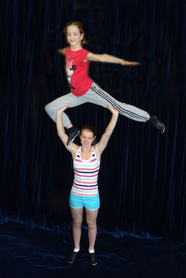
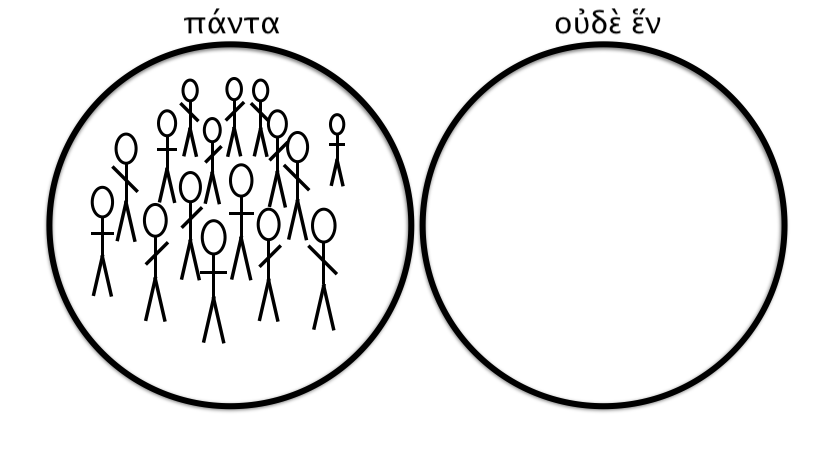
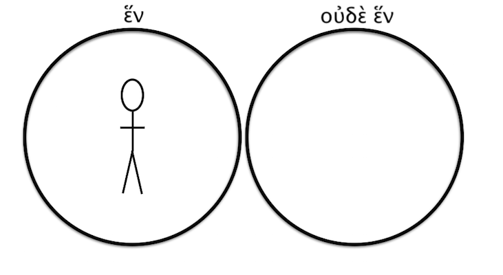
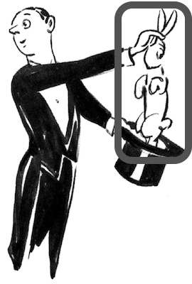
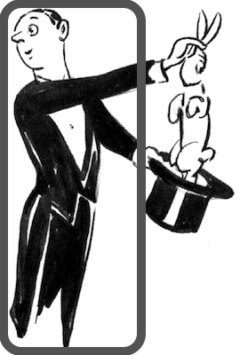
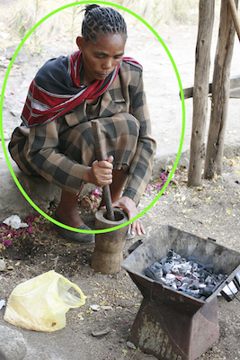
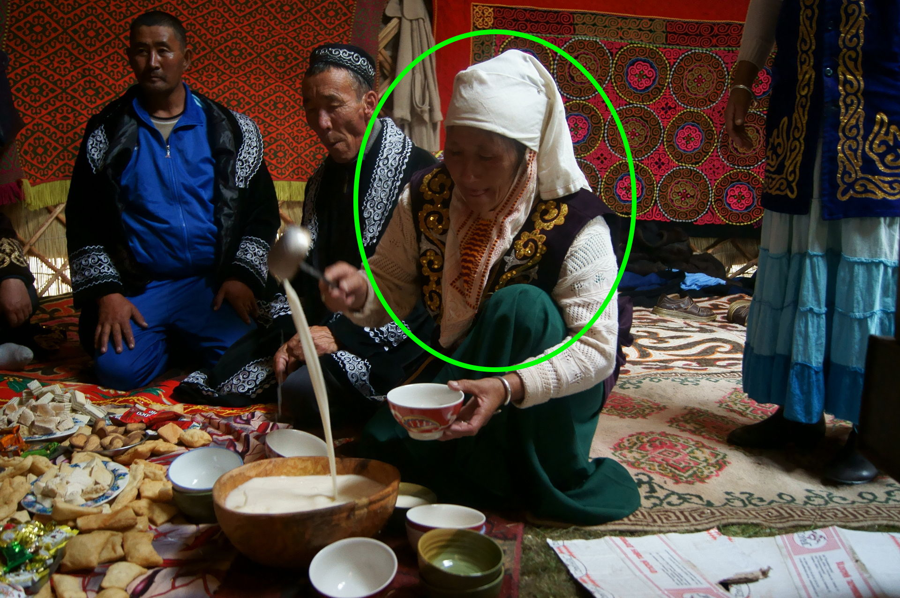
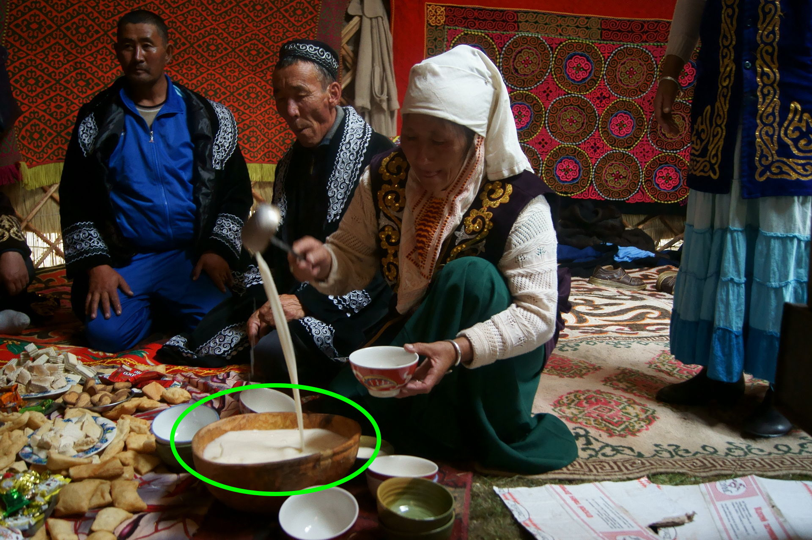

γραφὴ ζῶσα
Living Language in the Written Text
μάθημα δύο (Lesson 2)

Copyright 2017 by Jonathan Robie (@bibhumanities) and Micheal Palmer (@grklinguist).
This work is licensed under a Creative Commons Attribution-ShareAlike 4.0 International License.
Greek Language
Γλῶσσα Ἑλληνικκή
Lesson objectives
τέλοι τοῦ μαθήματος
- Pronouns: ἐγώ, σύ, αὐτός, αὐτή
- Those Same Pronouns with πρός: πρός με, πρός σε, πρός αὐτον, πρός αὐτήν
- Three forms of the verb εἰμί: εἰμί, εἶ, ἐστίν
Add audio for the bullet points.
Pronouns (ἀντωνυμίαι)
- ἐγὼ εἰμί
- σὺ εἶ
- αὐτός ἐστιν
- αὐτή ἐστιν
-- This slide needs an audio message informing the students that they will learn the meanings of these pronouns and verb forms will come in the following slides. --
ἐγὼ εἰμί
σὺ εἶ

αὐτός ἐστιν

αὐτή ἐστιν
- ἐγὼ εἰμὶ ᾿Ιωνάθαν.
- ἐγὼ εἰμὶ Μιχαήλ
- καὶ σύ, τίς εἶ;
- καὶ αὐτός, τίς ἐστιν;
- καὶ αὐτή, τίς ἐστιν;
The last three bullet points work well for in-person instruction. We need to think about how to make them work for distance ed.
ἐγὼ εἰμὶ ᾿Ιωνάθαν.
ἐγὼ εἰμὶ Μιχαήλ.

καὶ σύ, τίς εἶ;
αὐτός, τίς ἐστιν;
Add a picture of Jonathan, with Micheal's hand pointing at him.
᾿Ιωνάθαν
αὐτός, τίς ἐστιν;
Μιχαήλ
ἐγὼ εἰμὶ Μαρία.

αὐτή, τίς ἐστιν;
Μαρία
πρὸς τίνα
Audio: "Some words change their form depending on how they are used. Compare θεός with θεόν in the table below."
| τίς; | πρὸς τίνα; |
|---|---|
| ὁ θεός | πρὸς τὸν θεόν |
| ὁ λόγος | πρὸς τὸν λόγον |
Add audio for all Greek.
πρὸς τὸν θεόν
ὁ θεός
πρὸς τὸν θεόν
ὁ θεός
This slide begins a type of exercise we have not used yet. It needs an explanation.
πρὸς τὸν λόγον
ὁ λόγος
ὁ θεός
πρὸς τὸν θεόν
ὁ λόγος
πρὸς τὸν λόγον
πρὸς τίνα
Add audio: an explanation of the table, and all of the Greek.
| ἐγώ | πρός με | |
| σύ | πρός σε | |
| αὐτός | πρὸς αὐτόν | |
| αὐτή | πρὸς αὐτήν |
A brief DO THIS would help here.
πρὸς με
ἐγώ
πρὸς σε
σύ
πρὸς αὐτόν
αὐτός
πρὸς αὐτήν
αὐτή
ἐγώ
πρὸς με
σύ
πρὸς σε
αὐτός
πρὸς αὐτόν
αὐτή
πρὸς αὐτήν
ἐγώ
πρὸς με
σύ
πρὸς σε
αὐτός
πρὸς αὐτόν
αὐτή
πρὸς αὐτήν
ἐγώ
πρὸς με
σύ
πρὸς σε
αὐτός
πρὸς αὐτόν
αὐτή
πρὸς αὐτήν
ὁ θεός
πρὸς τὸν θεόν
ὁ λόγος
πρὸς τὸν λόγον
It is not clear what needs to happen here. Perhaps we could split this material over several slides to make it more manageable. I know what I would do with it in a face-to-face classroom, but how should it work for distance ed?
👨 αὐτός, 👩 αὐτή
τίς ἐστιν;
👨 αὐτ__ Παῦλος ἐι.
👩 αὐτ__ Κυνθία ἐι.
👩 αὐτ__ Μάρθα ἐι.
👨 αὐτ__ Ἰωάννης ἐι.
εἰς
👨 εἰς αὐτόν,
👩 εἰς αὐτήν
👨 αὐτὸς πιστεύει
εἰς αὐτόν 👨

👨 αὐτ__ πιστεύει
εἰς αὐτ__ 👨
👩 αὐτὴ πιστεύει
εἰς αὐτόν 👨
👩 αὐτ__ πιστεύει
εἰς αὐτ__ 👨
👩 αὐτ__ πιστεύει
εἰς αὐτ__ 👩

John 1:3-4
Κατά Ιωάννην 1:3-4
Add audio. Just read what's on the screen.
πάντα δι’ αὐτοῦ ἐγένετο,
καὶ χωρὶς αὐτοῦ ἐγένετο οὐδὲ ἕν.
ὃ γέγονεν ἐν αὐτῷ ζωὴ ἦν,
καὶ ἡ ζωὴ ἦν τὸ φῶς τῶν ἀνθρώπων·
Add audio: read each line aloud in Greek.
πάντα δι’ αὐτοῦ ἐγένετο
πάντα
πάντα ἢ οὐδὲ ἕν;
I'm not sure what to do with this in a distance-learning environment. We should brainstorm ideas.
ἕν ἢ οὐδὲ ἕν;
1 ἢ οὐδὲ 1;
Audio: read the Greek aloud. There is no need to comment on the breathing as long as it is done well in the audio.
ἐ ... ἑ
οὐδὲ ἕν
ἐν ἀρχῇ
πάντα δι’ αὐτοῦ ἐγένετο,
ἐγένετο
ἐγένετο ὁ δασύπους
As we discussed in our face-to-face meeting, we need to think through what to do with this. Explaining ἐγένετο is tricky.
I don't know why the outline appears gray here. When I open the image on my computer, it's blue like the outlines in other images we've used. Perhaps you can help me figure this out.
πάντα δι’ αὐτοῦ ἐγένετο,
δι’ αὐτοῦ
ἐγένετο δι’ αὐτοῦ
ἐγένετο δι’ αὐτοῦ
ἐγένετο...
...δι’ αὐτοῦ
ἐγένετο δι’ αὐτοῦ
δι’ = διά
διὰ τίνος;
👫
ἐγένετο δι’ αὐτοῦ
ἐγένετο διὰ τίνος;
ἐγένετο δι’ αὐτοῦ.
ἐγένετο διὰ τοῦ λόγου.
τίς;
👫
πάντα δι’ αὐτοῦ ἐγένετο
τίς ἐγένετο
διὰ τοῦ λόγου;
πάντα ἐγένετο
διὰ τοῦ λόγου.
πάντα δι’ αὐτοῦ ἐγένετο,
καὶ χωρὶς αὐτοῦ ἐγένετο οὐδὲ ἕν.
καὶ χωρὶς αὐτοῦ
ἐγένετο οὐδὲ ἕν
χωρίς
χωρίς
μετά
Audio: χώρις πωγώνος, μετὰ πωγώνος
χωρίς |
μετά |
Audio: χώρις πίλου, μετὰ πίλου
χωρίς
|
μετά
|
Audio: χώρις μύστακος, μετὰ μύστακος (from ὁ μύσταξ)
χωρίς
|
μετά
|
καὶ χωρὶς αὐτοῦ
ἐγένετο οὐδὲ ἕν
χωρὶς αὐτοῦ
χωρὶς αὐτοῦ
|
μετ’ αὐτοῦ
|
μετ’ = μετά
πάντα δι’ αὐτοῦ ἐγένετο,
καὶ χωρὶς αὐτοῦ ἐγένετο οὐδὲ ἕν.
ὃ γέγονεν ἐν αὐτῷ ζωὴ ἦν,
ὃ γέγονεν ἐν αὐτῷ ζωὴ ἦν,
ὃ γέγονεν
ἐγένετο ὁ δασύπους
ἐγένετο ... ὃ γέγονεν
ὃ γέγονεν ἐν αὐτῷ ζωὴ ἦν,
ἐν αὐτῷ
ἐγένετο ἐν αὐτῷ = ἐγένετο δι’ αὐτοῦ

ἐν τίνι;
👫
ὃ γέγονεν ἐν αὐτῷ ζωὴ ἦν,
ὃ γέγονεν ἐν τίνι;
ὃ γέγονεν ἐν αὐτῷ
ὃ γέγονεν ἐν τῷ λόγῳ
ὃ γέγονεν ἐν αὐτῷ ζωὴ ἦν,
ἡ ζωή
χωρὶς ζωῆς |
μετὰ ζωῆς
|
χωρὶς ζωῆς |
μετὰ ζωῆς
|
τίς; τί;
| τίς | τί |
|---|---|
 |
 |
τίς;
τί;
τίς;
τί;
ὃ γέγονεν ἐν αὐτῷ ζωὴ ἦν
τί ἦν ὃ γέγονεν ἐν αὐτῷ;
ζωὴ ἦν ὃ γέγονεν ἐν αὐτῷ.
πάντα δι’ αὐτοῦ ἐγένετο,
καὶ χωρὶς αὐτοῦ ἐγένετο οὐδὲ ἕν.
ὃ γέγονεν ἐν αὐτῷ ζωὴ ἦν,
καὶ ἡ ζωὴ ἦν τὸ φῶς τῶν ἀνθρώπων·
καὶ ἡ ζωὴ ἦν τὸ φῶς τῶν ἀνθρώπων
τὸ φῶς
τὸ φῶς

τὸ φῶς

τί;
καὶ ἡ ζωὴ ἦν τὸ φῶς τῶν ἀνθρώπων
τί ἦν ἡ ζωή;
τὸ φῶς τῶν ἀνθρώπων ἦν ἡ ζωή.
κατέλαβες;

Ἐν ἀρχῇ ἦν ὁ λόγος,
καὶ ὁ λόγος ἦν πρὸς τὸν θεόν,
καὶ θεὸς ἦν ὁ λόγος.
οὗτος ἦν ἐν ἀρχῇ πρὸς τὸν θεόν.
πάντα δι’ αὐτοῦ ἐγένετο,
καὶ χωρὶς αὐτοῦ ἐγένετο οὐδὲ ἕν.
ὃ γέγονεν ἐν αὐτῷ ζωὴ ἦν,
καὶ ἡ ζωὴ ἦν τὸ φῶς τῶν ἀνθρώπων·
ἐγώ εἰμι
σύ εἶ
αὐτός ἐστιν
αὐτή ἐστιν